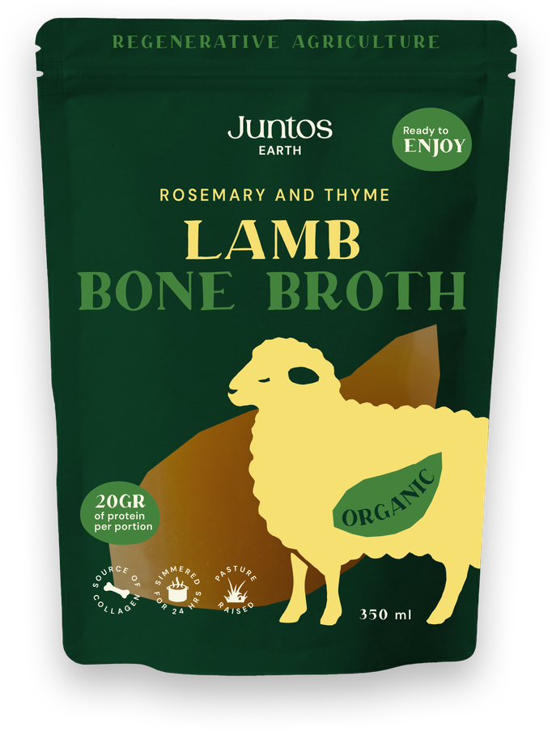
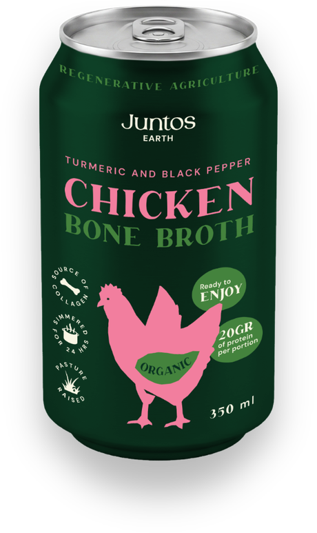
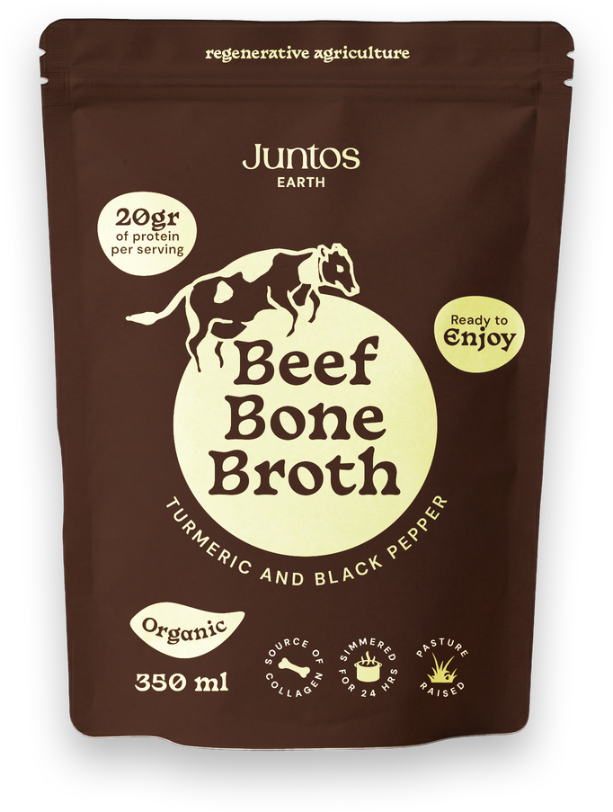

Rosemary & thyme
Lamb Bone Broth
20 g of clean protein per 350 ml pouch, and a natural source of collagen — simmered for 24 hours, never concentrated.
- 20 g protein
- Collagen
- 24 h simmer



Rosemary & thyme
20 g of clean protein per 350 ml pouch, and a natural source of collagen — simmered for 24 hours, never concentrated.
Turmeric & black pepper · in a can
Light, bright and first-timer friendly — loaded with glycine and proline, the amino acids your skin, joints and gut love. Crack it open anywhere.
Turmeric & black pepper
Same slow ritual, deeper flavour — and the minerals that do the quiet work: calcium, magnesium, phosphorus & potassium.
Nothing you don't need
Zero additives, zero preservatives. Keto & paleo friendly, gluten-free, low-calorie — from pasture-raised animals on regenerative farms.
Warm it, sip it, cook with it — breakfast broth is a personality trait now.
Straight from the farm
Three broths, one slow ritual: pasture-raised bones, organic vegetables and 24 quiet hours. Pick your character.
Rosemary & thyme · 350 ml pouch
Deep, herby and grounding — the original sipper for slow mornings.
Turmeric & black pepper · 350 ml can
Light, bright and ready anywhere — crack it open post-gym or mid-hike.
Turmeric & black pepper · 350 ml pouch
Rich, golden and gently spiced — the post-workout comfort cup.